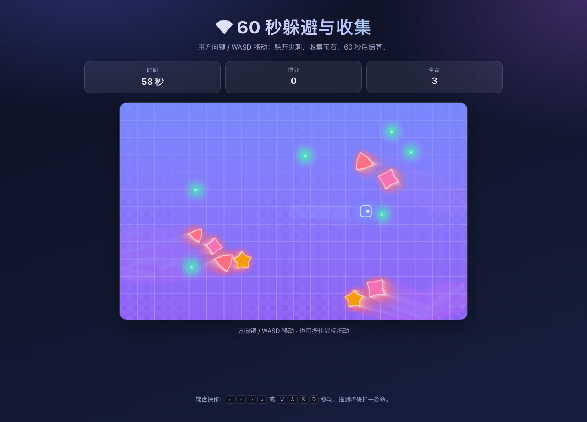

先定位原因，在原排查会话修改 Skill，再用新会话和原请求生成游戏。
直接原因：新样式被后面的网格规则覆盖。上游问题：Skill 要求所有玩法保留网格容器。
回复是分析材料，不是结论本身；结合原文和代码复核。
新增非网格场地容器，正文和模板一起调整，尺寸与比例按玩法选择。
仍保留固定页面顺序与四格数据条等原要求；本轮只处理场地容器。文档与 CSS 的画布默认宽度描述仍不一致；没有为了本次验证继续修改。其他玩法尚未验证。
三方案与本轮开发请求逐字一致；新项目只装修改后的 Skill，不带排查上下文。此次场地过小没有复现。

已检查场地尺寸、窄屏无溢出、扣生命、结算与重开；无页面运行错误。未完成收集得分、声音听感和其他玩法回归，不宣称全面通过。单次生成也不能证明稳定效果。
原版 Skill 与修改版均保留。完整日志仅在本机 Inspect 展示，需启动 4397 服务；本页其余材料为静态文件。